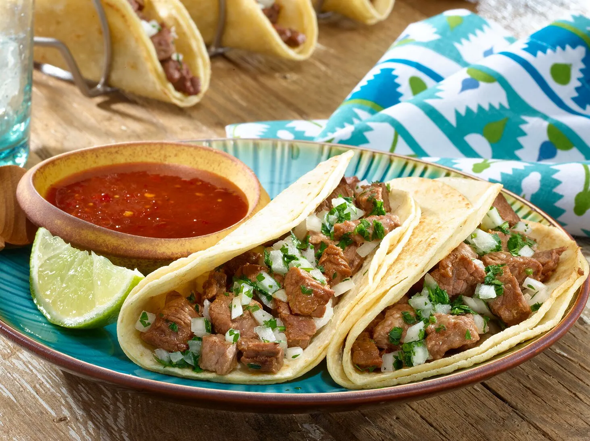

Go back to see more recipes.
Tacos

Tacos are probably the most famous Mexican food of the world and for and with a good reason, they are delicious.
For this recipe i want that you to know Tacos de Asada, they are beef tacos marinated in citrus juices and spices.
Ingredients:
- Skirt steak
- Chopped onion
- Lemon juice
- Salt
- Corn oil
- Corn Tortilla
Steps:
- Cut the beef and marinate with Mojo Criollo at least per 2 hours or max 24 hours.
- Pat the meat dry with paper towels and the cook with oil.
- Heat the tortillas.
- Finally, build your taco putting the Asada on the tortilla and serve it to your liking.